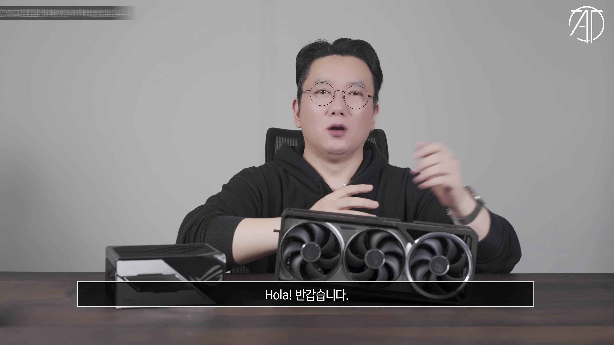
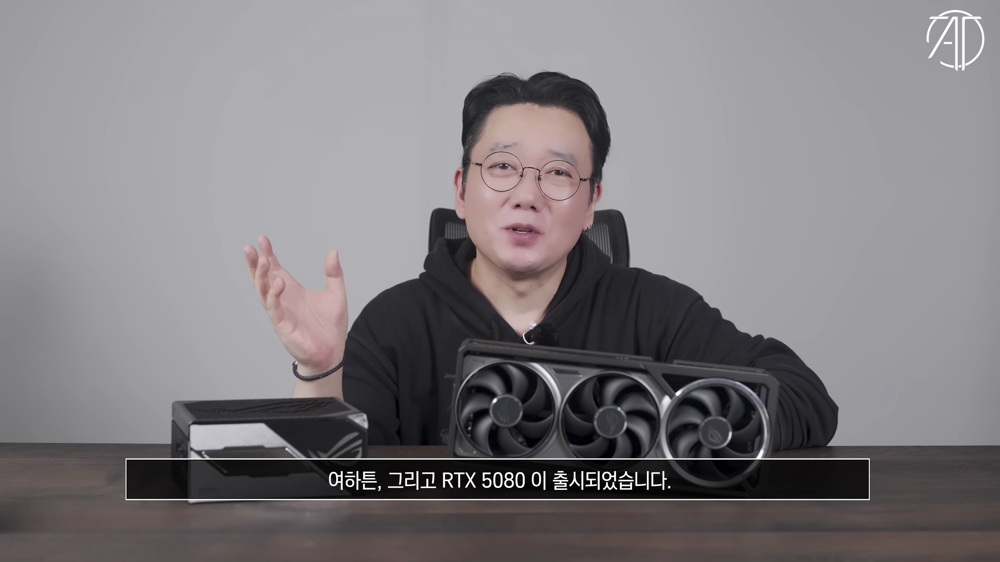
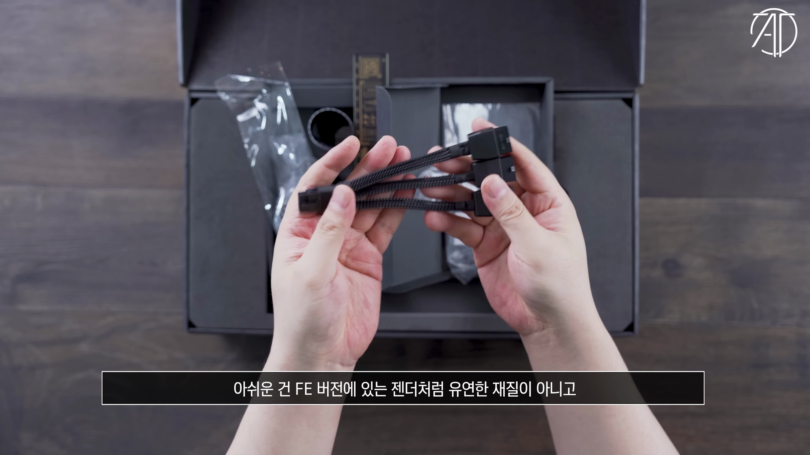
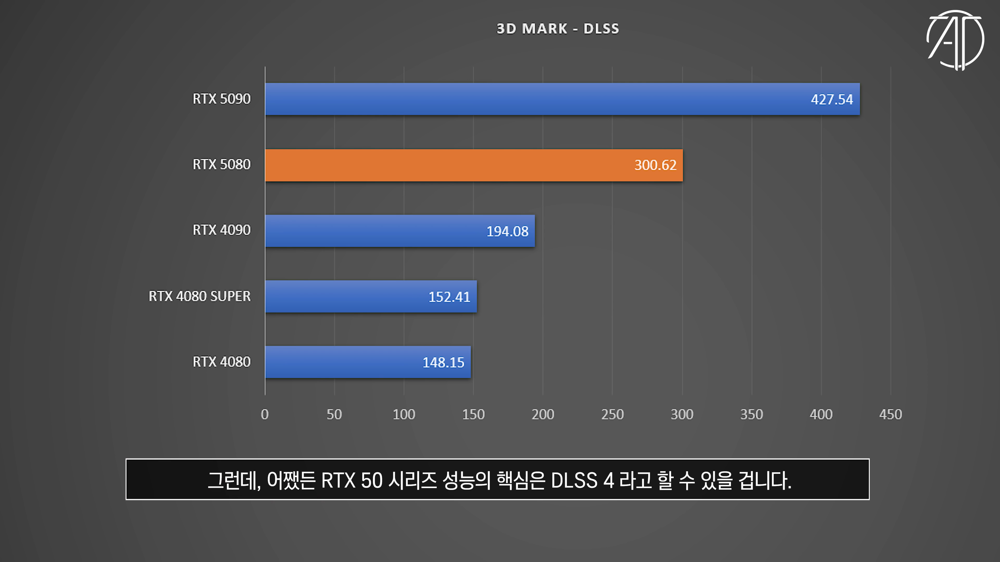
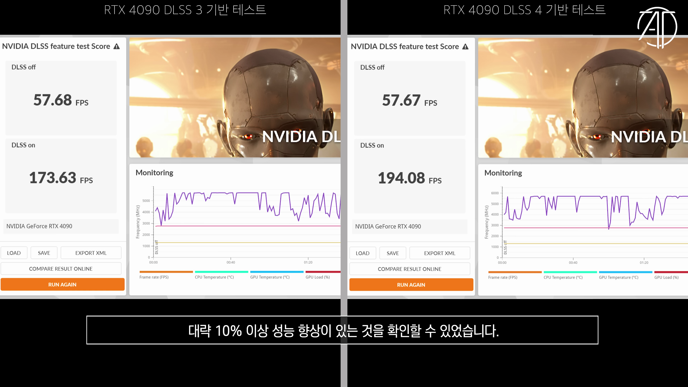
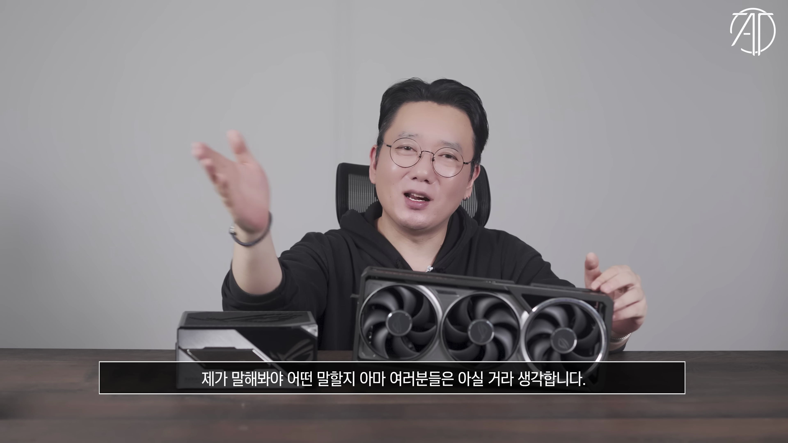

이번 포스트에서는 NVIDIA의 최신 그래픽 카드, RTX 5080에 대해 깊이있게 다뤄보겠습니다. DTS 기술을 탑재한 이 제품의 성능과 특징을 리뷰하며, RTX 5090과의 비교 분석을 통해 이 카드의 진정한 가치를 밝힐 것입니다. 
RTX 5090 출시 소식
최근 엔비디아에서 RTX 5090 그래픽 카드를 출시하였습니다. 이 제품의 실물이 공개되기까지는 시간이 걸릴 것이라 예상됩니다.
- 엔비디아 지포스 RTX 5090 출시
RTX 5080 모델 출시
또한, RTX 5080도 출시되었습니다. 이번 영상에서는 ASUS ROG Astral GeForce RTX 5080 OC Edition 모델을 중점적으로 다룹니다.
- RTX 5080 출시
- ASUS ROG Astral GeForce RTX 5080 OC Edition 소개

패키징 및 부속품 확인
패키징을 살펴보면, 다양한 부속 상자가 포함되어 있으며, 보증서와 그래픽 카드 지지대 사용법 등의 안내 내용이 포함되어 있습니다.
- 패키징 디자인
- 부속품 소개
젊은 그래픽 카드를 위한 전원 관리
이 카드의 전원 젠더는 8핀 3개를 연결하도록 설계되어 있으며, 전원 케이블을 잘못 연결할 시 발생할 수 있는 문제가 안내되어 있습니다.
- 8핀 3개 전원 젠더
- 전원 케이블 안전 안내

디자인 및 특징
RTX 5080는 4팬 방식의 다이캐스트 슈라우드 디자인을 채택하였으며, ASUS만의 듀얼 바이오스 스위치를 자랑합니다.
- 3팬 방식을 채택
- 듀얼 바이오스 스위치

전력 소모량과 성능 차이
RTX 50 시리즈 전반적으로 전력 사용량이 높아졌지만, RTX 5080는 5090에 비해 전력 소비량이 상대적으로 낮아서 효율적인 선택이 될 수 있습니다.
- RTX 5090과 성능 차이
- 전력 소비량 비교
DLSS 4의 혁신
RTX 5080은 DLSS 4를 통해 성능을 크게 향상시킬 수 있으며, AI 연산력 또한 이전보다 크게 개선되었습니다.
- DLSS 4 성능 향상
- AI 연산력 증가
게임 성능 분석
각종 게임에서 RTX 5080은 4090과 비슷한 수준의 성능을 보여주며, 전력 소비량은 월등히 낮다는 점이 강점으로 부각됩니다.
- 배틀그라운드 성능
- 사이버펑크 2077 결과
가격 및 결론
마지막으로 RTX 5080는 강력한 성능과 전력 효율성을 고려할 때 현실적인 선택일 수 있으며, 앞으로의 DLSS 4 기술과의 조화가 기대됩니다.
- 모델별 가격 비교
- 소비자의 선택Tags: #NVIDIA #RTX 5080 #그래픽 카드 #DLSS 4 #전력 소비 #성능 비교 #ASUS ROG Astral